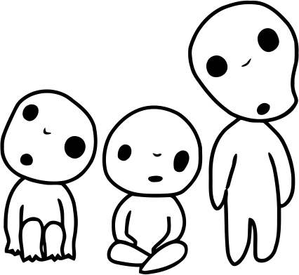

Películas Animadas

Las mejores 5 peliculas

Bienvenides a la fanpage de Studio Ghibli donde encontrarás la información de sus peliculas y
personajes en spanglish.
Creada para ustedes con todo el cariño y respeto que se merece este estudio y sus fans
de les cual formamos parte.